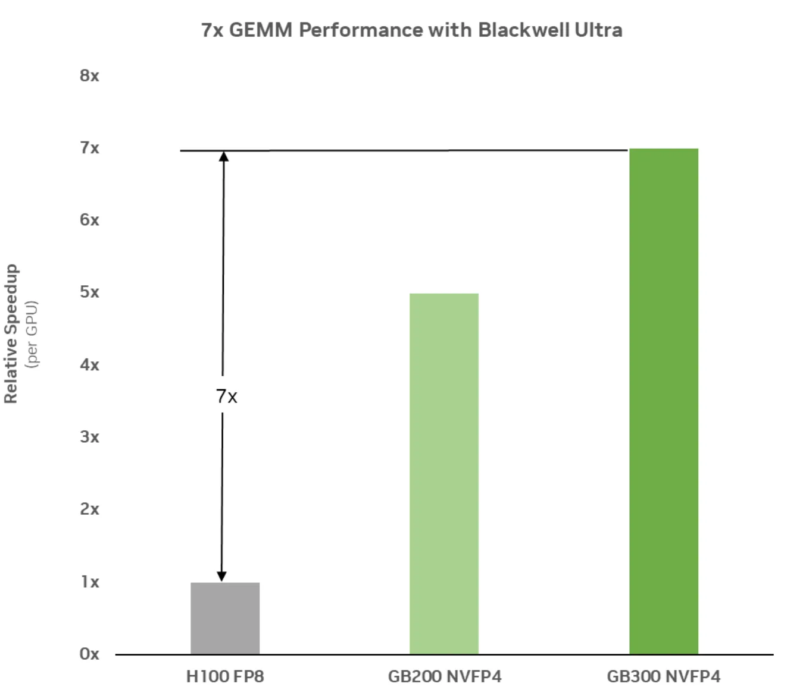
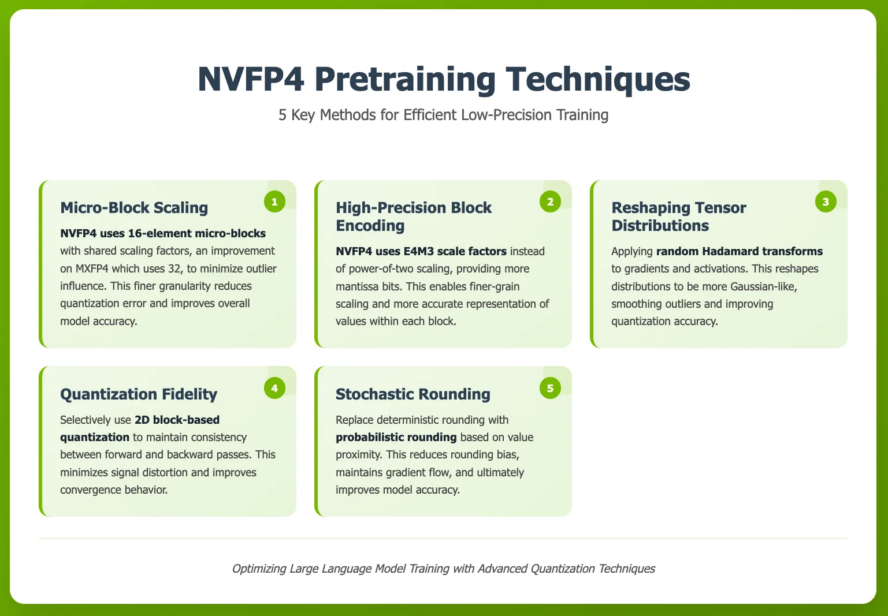
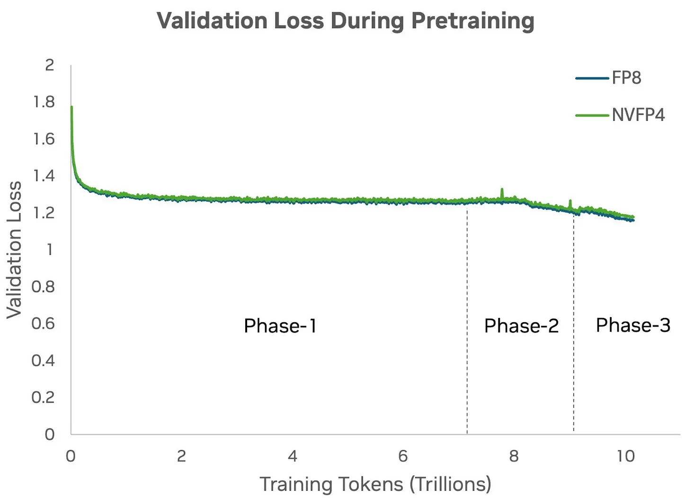
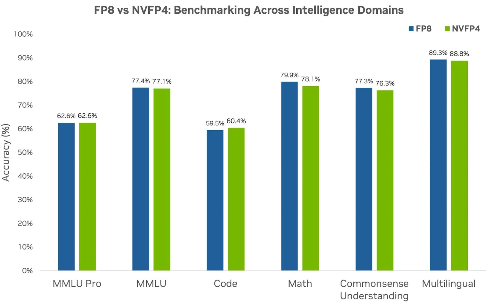

推理侧NVFP4已经证明4-bit又快又准，现在NVIDIA把它搬进预训练：12B模型、10万亿token从零训起，loss曲线和FP8基线贴得严丝合缝。配方有五味，下文拆解。
4-bit量化指把模型权重和激活的精度压到只有4-bit，相对常见的16-bit或32-bit浮点是断崖式下降。
4-bit做预训练很难：梯度与更新必须小心处理，在保精度的同时提速。需要专用技术和配方，才能把高精度张量有效映射到小得多的量化值集合上。
AI workload这些年指数级涨，不只LLM部署，预训练和后训练要处理的token也越来越多。组织扩建算力训数十亿参数基座模型，AI工厂能sustained多少token吞吐，越来越定义进步本身。
推理已经历多轮革新，从FP32、FP16到FP8，再到NVFP4。后训练量化证明NVFP4是推理吞吐的倍增器且保精度。剩下的硬骨头在上游预训练，基座模型还靠BF16或FP8保稳定收敛。
训练吃掉AI工厂的大部分算力、功耗和时间。功耗预算固定、GPU时间稀缺，每个比特、每个token、每个epoch都得算账。吞吐不是抽象指标，它直接决定能造多大模型、能跑多少实验、突破来得多快。
4-bit预训练在这里是变革性的：砍内存需求、提算术吞吐、优化通信，同样硬件推更多token。配方对了，精度对标FP8、BF16，吞吐大涨：收敛周期更快、单位算力做更多实验、前沿模型规模再上台阶。比特少了不只省钱，它扩大AI工厂的能力边界。
为在4-bit做预训练，NVIDIA打磨了一套专用配方，直面大规模训练的动态范围、梯度波动、数值稳定性三大挑战。
Blackwell是NVIDIA首个原生支持FP4的架构。GB200与GB300的FP4 FLOPs吞吐巨大，一边用窄精度矩阵运算加速，一边保持大模型收敛要的规模与并行度，是FP4预训练的理想平台。
图1是Blackwell Ultra的实测GEMM性能：相对Hopper一代7倍。现代LLM本质靠矩阵乘，线性层是核心算子，FP4让这些操作更快更省，整个预训练从前向到梯度更新全程加速，time-to-train缩短，大规模模型迭代更快。

微块缩放：Blackwell的Tensor Core原生支持NVFP4，权重和激活的4-bit数值格式，每16个4-bit元素共享一个scale因子。块大小从MXFP4的32缩到16，离群值影响小，缩放更精，量化误差降、模型精度升。
高精度块编码：scale因子的精度决定量化质量。MXFP4的E8M0只能表示2的幂，舍入误差大；NVFP4用E4M3，带尾数位，缩放粒度细，块内有限量化桶利用更充分，值表示更准。
重塑张量分布：预训练的梯度和激活常有大离群值，伤害窄精度量化。对GEMM输入做Hadamard变换，分布变高斯形，离群被抹平，张量好表示。变换对模型架构透明，前向后向的线性层都能加。
量化保真：前后向的量化方法要对齐。用选择性2D块量化，训练全程张量表示一致，信号失真小，收敛行为好，鲁棒性强，在NVFP4这种窄精度下尤其关键。
随机舍入：传统确定性舍入永远就近，梯度舍入有偏；随机舍入按数值在两个可表示值之间的距离比例随机上下舍，消舍入偏差，梯度流不断，最终精度更高。

窄精度格式要在大规模预训练里实用，精度和稳定收敛缺一不可。实验用12B参数的Hybrid Mamba-Transformer模型，10万亿token，分阶段数据混合：70% 处切第二阶段数据配比，90% 处切第三阶段。
先训一条FP8基线，既往研究表明FP8接近16-bit精度；然后同一12B模型用NVFP4从零训。NVFP4跑全程收敛稳定，没有超低精度训练常见的抖动与发散。
图3的验证loss曲线：NVFP4与FP8基线从0到10万亿token全程贴合。上面的量化技术保证了即便比特砍得狠，4-bit预训练动态依然像高精度训练。

拿NVFP4预训练的12B模型和FP8基线比下游任务，覆盖六个智能域：MMLU Pro、MMLU、代码、数学、常识理解、多语言。
图4显示各域NVFP4与FP8基本持平。NVFP4是万亿token规模LLM预训练的稳健选择，大规模前沿模型训练的效率潜力已经兑现。

参考：https://developer.nvidia.com/blog/nvfp4-trains-with-precision-of-16-bit-and-speed-and-efficiency-of-4-bit/